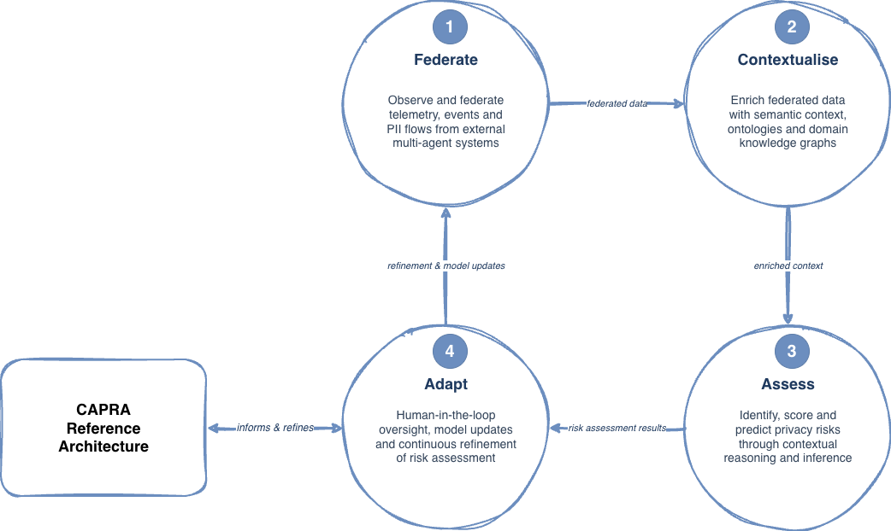
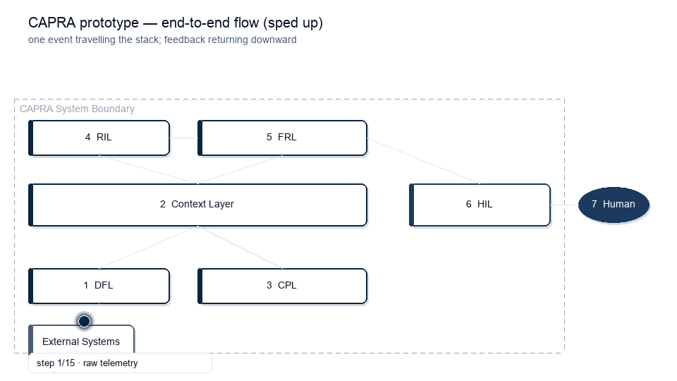

1
Research project outline
The research question, gap, and contributions in seven slides.
A Context-Aware Privacy Risk Assessment framework, implemented as an executable prototype, that connects agent telemetry, contextual reasoning, bounded risk inferences, proposed refinement, and human review.
The research question, gap, and contributions in seven slides.
The six layers of CAPRA, one at a time, culminating in a sped-up end-to-end animation.
The CAPRA prototype includes n8n workflows, deterministic synthetic fixtures for healthcare, retail, and university admissions, local infrastructure, dashboards, and retained test evidence. The beta route lets a reviewer exercise the same five-stage structure without building source code.
The admissions example uses twelve deterministic synthetic applicant records. A mock external-system seeder turns them into generated agent telemetry, which the CAPRA prototype processes through five executable stages over the shared Context Layer.

telemetry_raw records with canonical event identifiers.Select a layer to inspect its role, the information it receives, and the output it contributes to the CAPRA assessment path.
Observes heterogeneous telemetry, events, and PII flows from external multi-agent systems and normalises them into a common event record.
telemetry_raw records in MongoDB.Enriches federated events with semantic context so later reasoning can account for actors, purposes, data categories, transmission, and domain conditions.
prov:wasDerivedFrom links.Acts as CAPRA's shared knowledge substrate, retaining domain concepts and the contextual state exchanged across the executable layers.
Constructs scenarios and produces bounded risk inferences from enriched context and the prototype's privacy-risk vocabulary.
risk_inference_results records.Transforms assessment outcomes into bounded refinement proposals for human consideration rather than changing the system autonomously.
evaluation_results and feedback_results records.Presents refinement proposals to a human reviewer and captures an explicit approval or rejection decision.
The animation illustrates CAPRA's designed processing path from an external source through federation, contextualisation, assessment, refinement, and human review. It shows the implemented workflow structure rather than an empirically verified same-event trace across every store.

Historical campaigns exercised higher-education, healthcare, and retail inputs through the same CAPRA architecture. Domain-classified records were confirmed through risk assessment, with shared refinement output in aligned observation windows. The beta route provides new deterministic synthetic fixtures for these domains.
Docker provisions n8n, MongoDB, Fuseki, Loki, and Grafana. Supply one generic OpenAI-compatible endpoint, or select the local llama3.2 fallback.
git clone https://github.com/gracebilliris/capra-prototype.git
cd capra-prototype
cp reviewer/env.template reviewer/.env
# Add your endpoint values to reviewer/.env, then:
./reviewer/scripts/bootstrap.sh
./reviewer/scripts/verify_route.sh
./reviewer/scripts/run_demo.sh --domain admissions --minutes 30For the credential-free fallback, set CAPRA_LLM_PROVIDER=ollama and follow the host or container instructions in the quick start.
localhost:5679 · workflow and executionslocalhost:3002 · privacy-risk dashboardlocalhost:3031 · shared Context Layerlocalhost:3101 · stage logs queried through GrafanaPublished peer-reviewed and preprint outputs that motivate, ground, or extend the CAPRA prototype.
Featured publication · A-ranked journal
Published in Information and Software Technology, Volume 199, Article 108260 (2026). The paper presents a seven-layer architecture pattern for federating and observing heterogeneous telemetry across the AI software development lifecycle.
Read the paper View the prototype